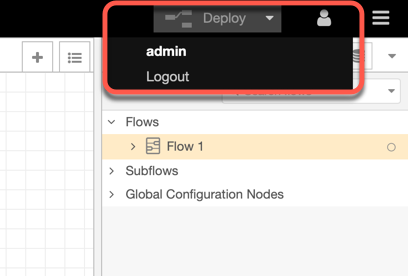
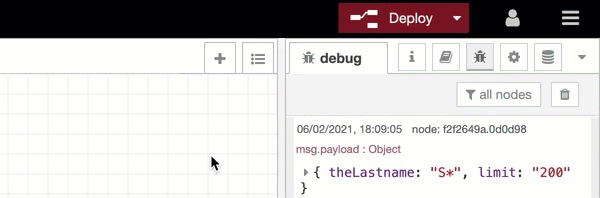
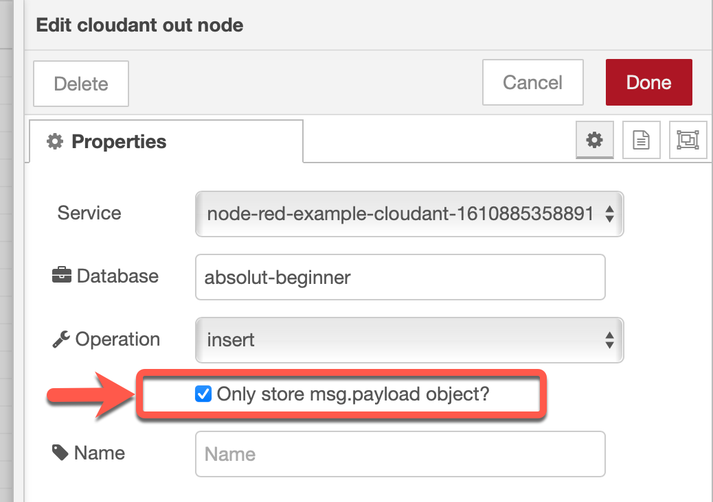

Tips¶
In case something doesn’t work as it should, check out following tips.
Tip 01: Ensure you're logged on to your Node-RED flow¶

Tip 02: Ensure you have wired your node output to a debug node and watch the output¶

Tip 03: Ensure you have deployed your changes to the flow¶

Tip 04: When you imported the example node-red-flow/basic-flow.json in your Node-RED instance¶
- Ensure you configured the
search indexfor theabsolute-beginnerdatabase - Ensure you selected 
Tip 05: Get an overview of your UI structure¶

Tip 06: If you can't install the dashboard¶
If you can't install the Node-RED dashboard and Node-RED UI Table. a) First you should verify that you use for the Cloud Foundry instance a memory size of 256 MB. (Thanks for feedback
Людмила Волощукto the video) b) Then it's mostly related to that your Node-RED version is outdated or related packages are outdated. The easiest way is to uninstall the Node-RED App and setup Node-RED App again. Understand the dependencies of the Node-RED App setup in IBM Cloud by reading this blog post.
The new in 2021 setup on IBM Cloud with the Tekton toolchain for the starter kit, you should follow this sequence to fully delete the Node-RED app.
Only if have running only the Node-RED app in your IBM Cloud instance.
- The 3 GitHub projects (just to save your not needed storage)
- The Toolchain
- The Cloudant alias
- The Cloudant service (don't delete, if you using this service also in other applications)
- The Continuous Delivery service (don't delete, if you using this service also in other toolchains)
- The Cloud Foundry app (don't forget to delete the routes you used)